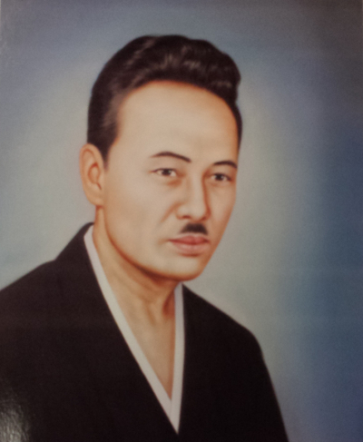
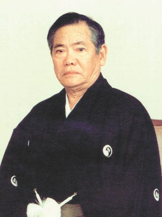

The Matayoshi Kobudo system was formed by the work of two remarkable instructors, a father and son, who dedicated their lives to leave us the legacy of their style. Matayoshi Shinko Sensei,
through their system, influenced many other kobudo schools, which are practiced today. Yamashita Tadashi Sensei brought Kobudo to the United States in the 1960s. The Yamashita/Matayoshi style's
foundation is Matayoshi Kobudo coupled with Yamashita Sensei's vast knowledge of Okinawan Weaponry for advanced practitioners.

Matayoshi Shinko Sensei
Matayoshi Shinko Sensei or "Kama nu Matehi" (Matayoshi the Kama) as he was often called, was born in the city of Naha, Okinawa, in 1888. As the third son of Matayoshi Shinchin, a wealthy businessman, Shinko was the
only member of the family to become involved in the martial arts. Although Matayoshi Shinko Sensei grew up predominantly in Okinawa, he traveled later on in his life around different areas of Japan and China.
It was in Okinawa, Hokkaido, and China that Matayoshi Shinko Sensei received the majority of his exposure and training in various weapon arts. Matayoshi Shinko Sensei would later incorporate many of the weapons and styles
of his instructors to form the foundation of what we know today as Matayoshi Kobudo system.
Matayoshi Shinko Sensei had the opportunity to experience the art of weapons from many different instructors. During his teens, Matayoshi began his training in kobujutsu under the instruction of Agena Chokuho Sensei in Gushiwawa village.
From Agena Sensei, Matayoshi learned Bo-jutsu, Sai-jutsu, Kama-jutsu, and Ieku-jutsu.
Matayoshi Shinko Sensei then became the student of Irei Sensei of Nozato, Chatan Town, from whom he learned the arts of Tonkua-jutsu and Nunchaku-jutsu. Not long after, at the age of 22, Matayoshi Shinko Sensei left on an
adventure to Manchuria where he joined a mounted nomadic tribe, from whom he gained exposure in the arts of Ba-jutsu (rising a horse with a bow and arrow), Shuriken-jutsu, and Nagenawa-jutsu (rope throwing).
Shiko Sensei continued in his travels to expand his knowledge of the art of weaponry, arriving in Shanghai, where he learned the arts of Nunti-jutsu, Tinbei-jutsu, and Suruchin-jutsu. While in Shanghai, he began
to develop interests outside of kobudo, yet still within the realm of the martial arts. Matayoshi Shinko Sensei became involved in the study of Chinese acupuncture and herbal medicine under the instruction of Kikoroushi.
He furthered his studies in China, learning Chinese boxing and Sorinji-Kempo in Fuchow, China.
Because of his abilities and knowledge, windows of opportunity were opened to Matayoshi Shinko Sensei, and he was able to participate in two very notable moments in the history of the martial arts.
In 1915, during the Imperial Memorial Budo Demonstration Festival at the Meiji Shring in Tokyo, Shinko Sensei demonstrated Tonkua-jutsu and Kama-jutsu, while Funakoshi Gichin Sensei (the founder of Shotokan) demonstrated karate.
This was the first time that Okinawan Kobudo was publicly demonstrated in mainland Japan, and remains a very important event in the history of Kobudo. Later, in 1921, during the honorable visit of Prince Hirohito (Showa)
to Okanawa, Matayoshi Sensei demonstrated kobudo, and Miyagi Chojun Sensei (the founder of Goju Ryu) demonstrated Karate for the distinguished guest. It was not until 1935 when Matayoshi Shinko Sensei returned to Okinawa,
settled in the city of Naha, and shaped his experiences to the point of developing the Matayoshi style of Kobudo.
Matayoshi Shinko Sensei passed away in 1947 at the age of 59.

Matayoshi Shimpo Sensei
Matayoshi Shimpo Sensei, son of Matayoshi Shinko Sensei and successor to the Matayoshi line of Kobudo, was born in Okinawa, in Yomitan village, located in the Kina district on December 27, 1921. Shinpo Sensei was introduced
to the martial arts by his father at the very young age of six. However, Matayoshi Shinko Sensei did not limit his son to the practice of Kobudo; he also exposed Shinpo Sensei to Kingai Ryu, a White Crane open hand system.
In 1937, Shinpo Sensei's father also introduced him to the open hand system of Hakaku Kempo, which he learned from Gokenki Sensei. Although Shinpo Sensei would have various instructors throughout his life, his father remained his lifelong instructor and mentor.
Matayoshi Shimpo Sensei remained in Okinawa until 1938, when he moved to Kawasaki-Shi in Kanagawa-Ken. He spent 19 years in the city of Kawasaki teaching and training. The year 1957 brought Shinpo Sensei back to Okinawa, where
he tought kobudo predominantly in Goju Ryu dojos, namely that of Higa Sensei. While teaching kobudo in various karate dojos, Matayoshi Sensei realized that karate was growing in popularity whereas kobudo was not. Matayoshi Sensei
wanted to increase the exposure of kobudo among the people of Okinawa, so he decided to form his own dojo.
In 1960, Matayoshi Shimpo Sensei founded his kobudo dojo in the city of Naha, and he called it the "Kodokan" in memory of, and as a dedicated to his teacher and mentor Matayoshi Shinko Sensei. The significance of "Kodokan"
is based on the kanji "Ko" (meaning light) and is a tribute to the "Ko" from Shinko; for what Kodokan translates to is the "Hall of the Enlightened Way."
Once Matayoshi Sensei opened his dojo, he focused on contacting Kobudo instructors and students all over Japan. His intention was to unite Kobudo practitioners under one goal; to not only spread the art of Kobudo, but
also to try and maintain the traditions that had been passed down from Kobudo Senseis of earlier days. Matayoshi Sensei had a strong interest in promoting Kobudo amoung young students to help make them better citizens
and contributors to society. As a result of this interest, Matayoshi Shimpo Sensei formed the Ryukyu Kobudo association in 1960. This association became the foundation of the Zen Okinawa Kobudo Renmei or
All Okanawa Kobudo League, which formed in 1972 and still exists today.
Matayoshi Shimpo Sensei passed away in Okinawa on September 7, 1997, at the age of 76.